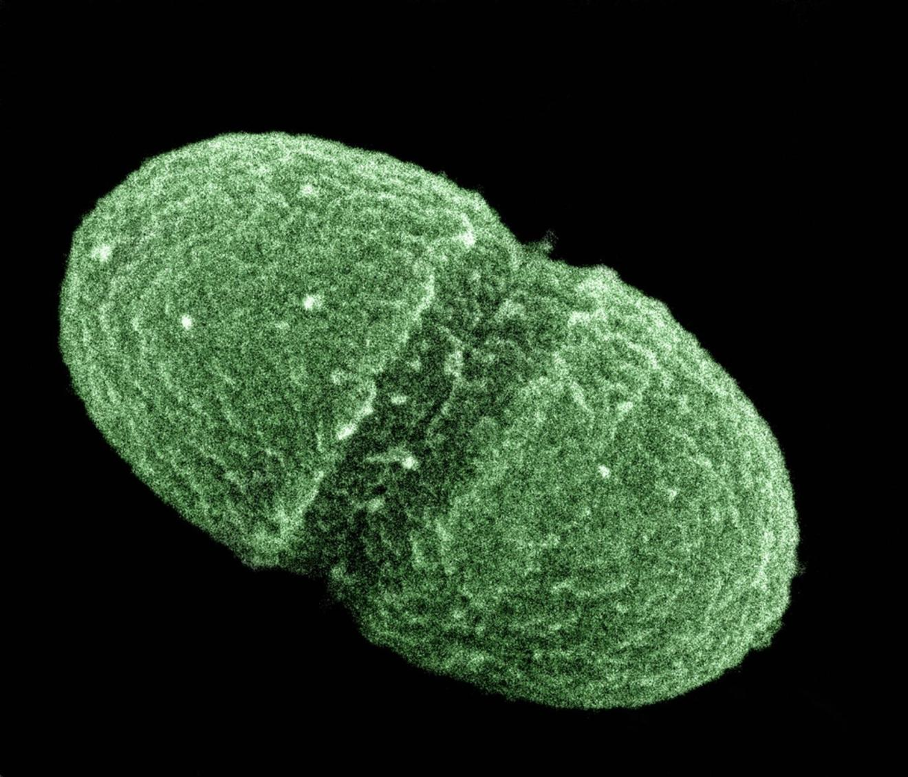

Why Your Gut Microbes Love Intermittent Fasting

Did you know that most of the cells that make up your body aren’t human at all? Some of them are microbial… and when you fast with the LIFE Fasting Tracker app, they fast too.
Microbes inside the human body come in all shapes and sizes and include bacteria, viruses, fungi, amoebae, and in some parts of the world, worms known as helminths. Over a thousand species may live inside our gut and in turn impact our health. They can change how we metabolize food and can even help tell our brains whether we are hungry or satiated. Bacterial microbiome analysis and molecular technologies have led to a greater understanding of our gut microbial communities, their complexity, and how they change over time and may contribute to health and disease.
There is growing recognition of the role of diet and other environmental factors in modulating the composition and metabolic activity of the human gut microbiota.” — Conlon & Bird, 2015
Our diets can substantially change our gut microbe communities, although the science of how this contributes to human health and disease is still early in its development. We know from a variety of animal and human studies that what we eat, such as the relative amounts of fats, carbohydrates and proteins that we consume, can remodel the microbial communities living in our guts. But when we eat can also impact our gut microbiomes, and thus our metabolic health. Enter time-restricted feeding.
“Only recently have humans and domesticated animals had constant access to food. During their evolution, many animals and humans ate only intermittently. In rodents, both fasting for 24 hours every other day or twice weekly extends lifespan up to 30%, independent of both total food intake and weight loss. [Intermittent fasting] can also protect against obesity, cardiovascular disease, hypertension, diabetes, neurodegeneration, and the clinical progression of several neurodegenerative diseases.” — Fontana & Partridge, 2015, edited.
A Circadian Rhythm of Metabolism
Tobe healthy, we need to be flexible at the right times. In other words, the cells and tissues in our body need to know when to transition from burning primarily sugars to burning fats. This is known as metabolic flexibility.
Each of our human cells can change their metabolic states cyclically throughout the day, based on a variety of internal and external cues. This happens because of what is known as the circadian rhythm. Our brain, organs, and tissues such as fat and muscles undergo cyclical changes in gene expression and other cellular and metabolic pathway activities. These changes can be driven by a variety of stimuli such as light fluctuations and nutrient availability. For example, the circadian clock dictates when our mitochondria, the energy producers in our cells, are most active and efficient. The levels of energy molecules including ATP present in various parts of our body, including in regions of our brain, normally cycle every 24 hours, based on daylight and feeding cues.
“The circadian clock controls protein phosphorylation to regulate the timing of metabolic pathways. The activity of kinases downstream of the insulin/insulin-like growth factor 1 (IGF1) receptor, measured as the phosphorylation of their substrates, is high during the active phase.” — Paschos & FitzGerald, 2017
The circadian clock helps our bodies know when to enter the most efficient metabolic state based on nutrient availability, such as moving from burning sugars to burning fats overnight. But if we eat in discordance with our biological clock, such as when we are more insulin resistant in the evenings, we can force our bodies into a less efficient metabolic state, or even prompt metabolic dysfunction such as seen in people with type 2 diabetes.
This imbalance happens as a result of a battle between the body and the brain. We all have a master clock contained within a small region of the brain known as the superchiasmatic nucleus. It tells us when we should be awake and when we should be at rest. However, it is not perfect and can be influenced by outside stimuli such as food, temperature and social cues, collectively known as zeitbergers. If our liver, muscles and adipose tissue are being told to be active (think late night snacking or the graveyard shift) while the brain is saying the opposite, we become biologically confused about which metabolic state we should be in, according to the time of day, sunlight and our sleep pattern.
Desynchronization of the suprachiasmatic nucleus master clock in the brain and peripheral circadian clocks in liver, fat, and skeletal muscle cells may increase the risk of chronic diseases. Feeding signals appear to be the dominant timing cue for the rhythms of peripheral clocks, including those that control metabolic pathways.” — Patterson & Sears, 2017
The interplay between circadian clocks and metabolic health is often visible in people with insomnia, jetlag, or who work night shifts. Shift work and jetlag can “throw circadian clocks out of synchrony to accelerate metabolic dysfunction and move towards the development of the metabolic syndrome,” (Paschos & FitzGerald, 2017).
Circadian rhythm disruption is associated with metabolic issues including insulin resistance, elevated blood glucose levels and prediabetes. When we eat can impact our health both directly and through setting of our circadian clocks. When we eat at night, our blood glucose, HbA1c and insulin levels increase more and say elevated longer than when we eat earlier in the day, which can result in an elevated risk of type 2 diabetes over time. People who eat and sleep a full 12 hours out of phase from their habitual patterns can experience raised blood pressure, glucose intolerance, hunger due to lowered activity of the satiety hormone leptin, and cortisol level changes.
One way to avoid this circadian clock confusion is through the use of time-restricted feeding regimens that limit our hours of eating to 9–12 hours earlier in the day. Research has revealed this practice can help us better regulate our body weight and energy metabolism. In fact, time-restricted eating or eliminating night eating altogether may help establish better circadian rhythms in people who travel through different time zones or who experience insomnia, with associated improvements in melatonin levels, sleep patterns and metabolic health.
Time-restricted feeding can be protective against diet-induced obesity and diabetes. In a 2012Cell Metabolism study in mice, animals provided a high-fat diet chow throughout the night and day wound up obese and metabolically dysfunctional, with a high risk of developing type 2 diabetes. But mice on the same diet albeit where the availability of the chow was restricted to 8 hours during their active phase were protected from obesity, metabolic dysfunction and inflammation.
In human observational studies, prolonged overnight fasting (at least 13 hours per night) has been associated with reduced risk of breast cancer recurrence in women, reduced risk of elevated HbA1c (HbA1c or glycated haemoglobin is associated with glucose in the blood, high levels of which are associated with diabetes), and reduced inflammation.
“Using data from the National Health and Nutrition Examination Surveys […], we have shown that each 3-hour increase in nighttime fasting duration was associated with significantly reduced odds of elevated HbA1c and significantly lower CRP [C-reactive protein] concentrations in women who ate less than 30% of their daily calories after 5:00 p.m.” — Patterson & Sears, 2017
Disrupted metabolism, which circadian misalignment (those late night snacks again!) and disruption (graveyard shifts) can trigger, is also known to accelerate aging and diseases of aging. Researchers today are investigating whether we may be able to delay aging by improving the amplitude of our circadian rhythms, for example through time-restricted feeding. This is still an outstanding question in human aging science, but it is the subject of concentrated research efforts.
What do gut microbes have to do with all this? Believe it or not, our gut microbes also have a circadian rhythm. Many types of gut microbes oscillate in activity and abundance throughout the day and night. For example, the gut microbe Enterobacter aerogenes is sensitive to melatonin (the “sleep” hormone). It is generally found in our guts and plays a role in fermenting sugars and producing gas. It can also cause opportunistic infections when spread to other tissues or when its relative abundance increases due to antibiotic treatment.
More reading: A day in the life of the meta-organism: diurnal rhythms of the intestinal microbiome and its host, Thaiss et al. 2015
Disruption of the human circadian clock, for example through mutations in circadian clock genes or by jetlag, can cause disruption in the microbial equivalent and can potentially negatively impact our metabolic health. Luckily, research suggests that following a normal feeding rhythm, even if you are jetlagged, stay up late or are deprived of natural sunlight, can help restore healthy rhythms in gut microbe abundance and activity. These microbial activity rhythms in turn help reset and maintain the circadian clock of cells in our intestinal wall and our liver.
Are you a frequent flyer? Eating and timing your meals for gut health may be key to maintaining your circadian rhythm.
“Disruption of the microbiome circadian rhythm is associated with metabolic disease in mice, [and] host immune cells have been shown to respond to the resident microbiota in a circadian-fashion.” — Bacteria Need “Sleep” Too? Microbiome Circadian Rhythmicity, Metabolic Disease, and Beyond, Trinder et al. 2015
In a 2014 Cell Metabolism study in mice, time-restricted feeding prevented weight gain and improved the diversity and circadian cycling of gut microbiomes in mice fed an obesity-inducing diet. Mice fed this diet but allowed to eat at any time (ad libitum) ended up with an obesity-associated gut microbiome that stayed uniform, day and night. While time-restricted feeding didn’t restore the healthy, circadian cycling gut microbiome seen in mice fed a healthy diet, cycling and levels of obesity-protective bacteria were still improved as compared to mice who ate an unhealthy diet ad libitum.
“Cyclical changes in the gut microbiome from feeding/fasting rhythms contribute to the diversity of gut microflora and likely represent a mechanism by which the gut microbiome affects host metabolism.” — Zarrinpar et al. 2014
Role of Fasting on Metabolic Health… and Microbes?
“The influence of intermittent fasting on overall metabolic parameters is where we are at the moment,” says “Germ Guy” Jason Anthony Tetro, a Visiting Scientist at the University of Guelph. “We are just now starting to determine whether there is any impact on the human microbiome during fasting.”
A long list of animal studies and a short list of human intervention trials have demonstrated the metabolic health benefits intermittent fasting, including regimens such as alternate day fasting (fasting or eating under 500 calories per day every other day) and time-restricted feeding. In a 2017 Annual Review of Nutritionarticle on intermittent fasting, Ruth Patterson and Dorothy Sears from the University of California write that reduced nighttime eating and prolonged overnight fasting may result in sustained improvements in human health, and that such intermittent fasting may exert its health benefits through circadian biology, the gut microbiome and improved sleep patterns.
We are just starting to understand how intermittent fasting may impact gut health and microbiomes, and how this may in turn explain some of the health benefits of going without calories for extended periods of time (12+ hours) on a regular basis. Scientific research, mostly in animal models, is revealing that intermittent fasting may restore microbe diversity in the gut, increase tolerance against “bad” gut microbes, and restore the integrity of the intestinal epithelium. Extended fasts on the order of days to weeks, however, may have unforeseen impacts on gut microbe diversity.
One 2014 study found that intermittent fasting (alternate day fasting for 12 weeks) helped Salmonella-infected mice clear the pathogenic bacteria more quickly through a heightened immune response, prevented the bacteria from crossing out of the gut and resulted in elevated levels of IgA, an antibody or protein that boosts the integrity and immune function of mucous membranes like those lining the intestines. Other mouse-model studies have found that intermittent fasting protects the gut against the negative impacts of stress, which include inflammation.
A particularly intriguing 2017 study in Cell Metabolism found that alternate day fasting in mice lead to elevated gut microbe fermentation products acetate and lactate that in turn promoted white adipose tissue browning. Brown or “beiged” fat cells contain higher numbers of mitochondria and are associated with greater insulin sensitivity and metabolic health in animals and humans. Studies in humans have in fact linked gut microbiota composition to adipose tissue browning and insulin action. But how could gut microbes possibly change the health of our fat tissue? Their fermentation products, including lactate and acetate, could be the key.
Lactate and acetate, which has anti-obesity and anti-diabetic activities and can activate AMPK and reduce glucose intolerance in the liver, are short-chain fatty acids produced by microbiome fermentation of complex carbohydrates and starches. At least theoretically, intermittent fasting could further promote the health impacts of a diet high in fiber and complex starches by priming our gut microbes to ferment these products into fat browning signals!
Re-Building Your Gut Microbial Communities
Unfortunately, we still understand little about how longer fasting periods impact gut microbes and health in humans. Theoretically, fasting can remodel our gut microbiome toward a healthier community profile.
“Our gut microbes tend to send out recognizable signals when they are getting, well, hungry,” Tetro said. “This is getting into theoretical territory, but we know many species of ‘bad bacteria’ have a relatively short doubling time. So, if you fast, they will tend to starve more quickly than the healthy bacteria in your gut. Many of these ‘good bacteria’ have longer doubling times, and won’t be as greatly affected by your fasting, theoretically. The key now is to find out exactly how the circadian rhythms, nutrient deprivation, and microbe doubling times affect metabolic in humans. We’re not quite there yet. What we can say now is that intermittent fasting may, emphasis on ‘may,’ have an impact on overall microbial composition over the short term. But as we have found with probiotics and interventions other than antibiotics, the gut microbiome is resilient and may return to a previously held state following any short-term intervention.”
Some early research studies indicate that an extended fasting period can let our guts rest and restore the integrity of our intestinal walls, or epithelium. This may be especially important to protect us against the “leaky gut” or gut permeability processes prompted by high fat diets that let bacteria and other toxins enter surrounding tissues, where they produce inflammation. The impact of energy-rich meals on the movement of bacterial toxins across the gut wall is referred to as dietary endotoxemia, and is typically elevated during overfeeding and weight gain.
But while intermittent fasting can give your gut healthy breaks, it doesn’t turn hamburgers into a health food. If you are concerned about the health of your gut microbes, Tetro recommends sticking to a balanced or Mediterranean dietwhen you aren’t fasting.
“[E]ating habits are the main significant determinants of the microbial multiplicity of the gut, and dietary components influence both microbial populations and their metabolic activities from the early stages of life.” — Mediterranean Diet and Health: Food Effects on Gut Microbiota and Disease Control, Chierico et al. 2014
In conjunction with fasting, prebiotics and dietary fiber can improve epithelial integrity in our gut and reduce inflammation. Given the health benefits of dietary fiber, it can’t hurt to start and end your longer fasts with foods high in prebiotics and fiber, such as asparagus, root vegetables, flax and chia seeds, almonds, bran, garlic, bananas and other fruits and vegetables.
To Live Longer, Give Your Gut Microbes a Break?
From recent scientific work, we’ve learned that not only what we eat, but when we eat, can impact our health, potentially by changing the microbial communities in our guts. Intermittent fasting and other forms of dietary restriction, together with intake of fiber and other gut microbe enhancing foods, can theoretically increase insulin sensitivity, reduce inflammation, enhance immune tolerance and tissue repair, boost mitochondrial function, rid the body of damaged senescence cells and ultimately increase health and longevity.
“Intermittent fasting can improve our gut health by altering our metabolism and immunity functions,” Tetro said. What’s more, metabolism and immunity function famously deteriorate as a we age, potentially linking intermittent fasting, gut health and aging more closely than we’ve realized.
We need more research on the interplay of calorie intake, meal frequency and timing, nutrient modifications and the microbiome on human biomarkers of health and aging. But so far, there’s reason to believe that meal timing, diet and the microbes in our guts will play an important role in how well we age.
Cover photo: US Department of Agriculture